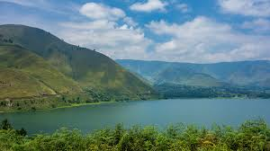
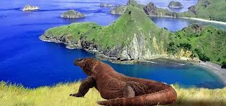
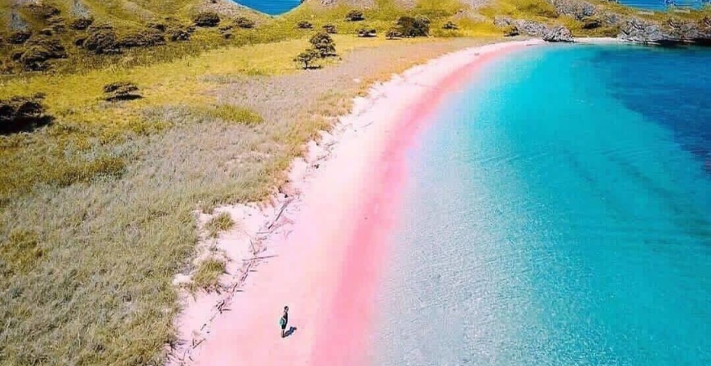

Selamat datang di website kami, teman perjalanan anda menuju petualangan yang sangat menyenangkan. Kami adalah platform traveling yang bersedia untuk membantu anda merencanakan, menemukan, dan menikmati liburan santai hingga ekspedisi penuh tantangan.
Rekomendasi Tempat

Danau Toba
Jelajahi Danau Toba, danau vulkanik terbesar di dunia dengan pemandangan pegunungan yang megah dan air biru yang tenang. Di tengahnya, Pulau Samosir menyimpan kekayaan budaya Batak yang unik.

Pulau Komodo
Rasakan sensasi bertemu langsung dengan Komodo, kadal purba raksasa. Nikmati pantai berpasir merah muda dan kekayaan bawah laut Pulau Komodo di Nusa Tenggara Timur.

Candi Borobudur
Candi Buddha terbesar di dunia dengan arsitektur bertingkat dan relief kisah Buddha. Terletak di Magelang, dikelilingi alam yang mempesona.

Pantai Pink Lombok
Pantai dengan pasir berwarna unik, cocok untuk snorkeling dan berenang. Suasana tenang dengan pemandangan tropis yang memanjakan mata.